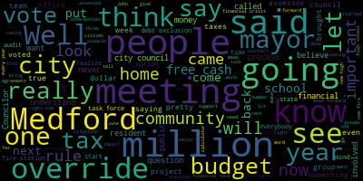

[Petrella]: Hello, everyone, and welcome to your show, Medford Happenings. I am John Petrella, and we're going to do a show for and about the city of Medford. Today, we have a special guest councilor, Medford City Councilor, George Scarpelli. He will be speaking on facts you need to know about the upcoming override that you will be asked to vote on on this election. George, I want to welcome you, and I'm glad you can join us on the show. Well, John, thank you so much.
[Scarpelli]: Medford Happenings, I think, is a very vital asset to our community, as well as our Medford community cable. Access channel, I think that without a a Newspaper in Medford to get information out to our residents. It's so important that you're doing this So I thank you very much for doing this.
[Petrella]: All right, George. Thank you very much. I appreciate that Without getting into any further Hesitation here. I'm gonna get right into the questions. Everyone's concerned about the two and a half overrides in the city We're seeing signs for we're seeing signs against So, I'm going to get right into it, George. As a Medford City Councilor, what is your opinion on the upcoming override vote?
[Scarpelli]: Well, it's a pretty in-depth opinion, I think. You know, we, as a city councilor, it's my responsibility and our responsibility to make sure that we are the financial stewards of our residents' budgets and making sure that our tax money is being spent appropriately. One thing we realized in our communities without, like I said, without a newspaper, we found it very difficult to get information out, and this being a good example. So a few months back a group was organized called All Medford and the All Medford group started to really educate and communicate and really bring pride back to Medford and it's been super successful. We've had hundreds if not thousands of people join our group, and when I say our group, I as a member, as our group. And we're now jumping right into a very serious, you know, situation and big step here in Medford, which is an override, Proposition 2 and F overrides and a debt exclusion. So what I'd like to do, if you don't mind, John, I'd like to start with explaining to our constituents and our viewers that there are three votes that they'll be taking. They'll be question six, question seven, and question eight. Question six is a debt exclusion for a rebuild of a new fire station headquarters on Main Street. That's a 30 million dollar project that I will share with you. The firefighters have come out publicly and they are not supporting the override for the fact that, you'll see a trend as I go through my speech today, but you'll see that there weren't really, the firefighters weren't involved in the final decision making of that fire station. And they're, In the conversations with the union leaders, one of the major issues is that there was really no, there was no partnership involved. No one, no firefighters were really involved in the final decisions. And what we were heard from firefighter Marcelino, Danielle Marcelino, who's the secretary for the union, she explained that they would not support the debt exclusion for the fire station because It was an inferior product and it's not set up for success as they move forward in the lives of future Medford firefighters. So with that, they said, you know, let's be responsible enough to share with the community that they would rather not let the citizens of Medford suffer with the tax just to check a box. So they responded back and they're not going to support it. So question six is about a new fire headquarters on Main Street. And question seven was presented from the mayor. for an override in question seven is $3.5 million of our property, our real estate taxes for our community for 2025 and from the general operations of Medford public school, $3 million for the Medford public schools, which includes but not limited for teachers, literacy coaches, behavior specialists, and administrative assistants and so on. Question 8 was put forth asking for a $4 million override tax from our real estate and personal properties for 2025 as well. And they're looking for increasing access to the arts and vocational programs and expanding classroom instructional opportunities. These are simple taxes and they were put forth, and I'll publicly say, as scare tactics from the administration. We can see that the overrides, and let me just educate everybody a little bit because some people don't really understand what a debt exclusion is in comparison to a Proposition 2.5 override. A debt exclusion is a tax to the community, to the residents, that will be put on their taxes every year until the project that it's funding is complete. So if it's $30 million for a new fire station, you would then start the clock with paying off that bond of $30 million. When that $30 million is paid, that tax will come off the resident's tax roll. So they won't see that tax anymore once it's paid. The misconception is the Proposition 2.5 override is very simple. You will get taxed a certain percentage from your home's assessed value, your real estate tax. Which is going up, by the way, correct?
[Petrella]: Yeah, it is.
[Scarpelli]: And I'll explain more with that. And with that process, that's a tax that's being misled in the public by people that are saying that if it's just $400 for the year, it's not just $400 for a year. Okay, let's start off by saying that when that tax is starting is January of 2025. So it's voted in November Wow, it'll go into place starting in January of 2025 which our residents most of our residents Won't be prepared for that We'll now start that tax and at the end of every year There is some understanding that some taxpayers have reached out to me and said oh, yeah, then then it's done I said no It doesn't what ends up happening is that tax bump that you're going to see for this override will then compound every year Every year at least two and a half percent every year. It'll stay with you forever never goes away never goes away now in clear up a few other misconceptions The comment that we're hearing is, it's just this, it's just that, it's not true. We know that this council has put forth in the past rent control, transfer tax, a renter's and owner's registry fee, and what we're looking at down the line is a new high school. Something that has already been taken out of free cash to start that process. And we're looking at a close to a, if it's a refurbished, maybe $200 million. And if for a new high school, it's $400 million. Just for an example, neighboring community just did their high school. Debt exclusion was put in for over $240 million. It's $1,000 more a year in taxes for each household. $1,000 more for each household, okay. So it's not just what people are saying. Now, I know the other side, the Yes Group, has a calculator in place. They do. They do. And the calculator is misleading because we've had phone calls from different organizations, different people that have questioned that, saying that I put my address in and the number that's coming out is wrong because my assessed value and what they're saying my house is assessed at is totally wrong. So we've done our homework, and we reached out to the assessor, and the assessor has informed us that no one in his office has been involved in setting up any calculator for any organization to educate our community. So they know nothing about that. As a matter of fact, they also shared that the assessment team, our assessors, don't even understand how they can even conceivably work in an override if it was voted in in November because it's such a daunting task. So we asked, well, could you possibly put in place a calculator so residents can see what kind of an impact a true calculator through the assessor's office. He said no one's asked him to do that and he doesn't plan on doing it right now because they are so busy. And this is from the city's assessor. This is the city assessor. This is from the city assessor. So the understanding that it's just this much money, it's not. It's not. And I think that what I see as a trend that's bothering me is that our most vulnerable members of our community are threatened right now, and they should be. So if you're a senior citizen, you're living on a fixed income, if you are a veteran, if you are disabled, and you find it very difficult even just to survive right now, This could destroy them. Destroy them.
[Petrella]: That's, you know, the people I talk to, George. I know a lot of senior citizens. I am one now. I know it's hard to believe, but I am one. But they're the ones. I see them every day. I talk to them. They are very nervous about this. They're afraid of actually losing their homes if this goes through.
[Scarpelli]: And that's a realistic option.
[Petrella]: It is.
[Scarpelli]: The misconception of some of my colleagues on the city council that Well, if the house is worth a million dollars, they could just take $100,000 out. And I share a story, and I won't give my neighbor's name because I love her.
[Petrella]: Okay.
[Scarpelli]: Let's call her Mrs. Jones. Mrs. Jones bought her house for $50,000 years ago with her and her husband, raised her family, lives there today. She was a seamstress. Well, Mrs. Jones' husband passed away 15 years ago, but the home is now appraised at a million dollars. With her social security and her husband's retirement, it's very difficult for Mrs. Jones to survive in her home because her home is being assessed. And just for taxes alone makes it very difficult for the choices she can make, whether it's eating something special during the week or paying for her medication. So people don't realize the impact, and it's true impact. uh... so i i think that's important as hundreds people hundreds of people in the city just like in a right there is i mean let's be honest that's a big part of it i mean so this is really going to affect everybody what i mean what if you rent well and i think that people don't realize that unfortunately you look at you look at some people like mrs jones same situation right that on the two or three family met for it uh... you would see that the trickle-down effect, where they can't afford to pick up the total cost that's being added to them, that they would have to put it onto their renters. And they don't want to. I will tell you, my dad was a homeowner of a two-family, and we took a lot of pride in making sure that our tenants were secure enough in the rent that they can maybe move forward and purchase a house. And we were lucky that we had five great tenants and four have moved on to own homes, and the fifth, my dad's moved on to heaven for a few years now, but my brother now owns the home and he still keeps that tenant's rent reasonable for them. Unfortunately, the renters and, you know, you look at our tough students, they're going to be put in a bad situation as well. Because a lot of our tough students do rent, and that's going to impact them. Our small businesses, maybe you don't realize it, but when a family has to make a decision of just $400 or just X amount of dollars, they have to make cuts somewhere. And unfortunately, it's going to trickle down to our small businesses as well.
[Petrella]: There's a lot of money involved. They keep talking like it's not a lot. But it is. For a lot of people, that is a lot of money on a monthly basis. It is.
[Scarpelli]: And I think what people have to realize, too, because we've done some homework. I know that there are people on the other side that would like to say that there are organizations, like All Medford, who really have taken the leadership in this fight against the override because they see how it hurts most of the Medford residents. that they've done the homework, and we have communications back and forth. I know that one member has talked with the assessor again, and just so people understand that own homes, your homes have recently been assessed. So you can see that hike. Then you see taxes that might possibly be added on. Then you look at an override for a new high school that's going to be added on. What people don't realize next year in 2025, Holmes and Medford will be reassessed again, but they'll be using the numbers from 2023. And why is that important? Our homes were assessed a lot higher in 2023 than they are today. So you're going to see a bump again in people's taxes. And it's funny that people that, you know, might not understand this because they don't own a home yet, but what they need to understand is that When the homes, they say in Medford, we're taxed low, and we are. We're very fortunate that our homes are taxed low. What they don't realize, the neighboring communities they want to compare us to. don't have the assessments that we do. So apples to apples, our numbers are pretty complimentary to our neighbors next door that might think that they have lower taxes. So it will play a huge factor in people's lives.
[Petrella]: You know, another thing I always think about And, you know, I wonder this all the time, okay? The other side always says, you know, the fear, you mentioned that about they put fear into people, and that's, you know, that seems to be what they do. I guess one of the questions that a lot of people have is, what are the alternatives, George? Are there alternatives? I mean, how do we get here?
[Scarpelli]: Well, if I can, John, I think people have to understand where this all started from. Yes, please. And what's important is they understand that we're hearing it too, people from all Medford are calling me and saying, George, I can't believe what they're saying about the people that are involved with all Medford. And again, people have to understand this publicly. The All Method group and the city council, George Scarpelli, has never, ever said, we are fighting. We never wanted an override. All we actually said was, where is the transparency? Explain to us the three most important things that I think that I've heard over and over again. That's important when you look at an override. One, how did we get here? Two, how do we correct it? And three, how do we never get here again? And what we did is starting the process of city council, and the people that want to say that George Scarpelli is not telling the truth, he's a liar, because that's out there too, and that's okay. But the difference between what they can say and what's proof, it's the magic of television. You can go to YouTube and watch every single meeting, and I'll tell everybody, if you're interested, start back from June 20th of 2023. That was our budget meeting, and it started there, John. We had our meeting, and prior to that meeting, all seven Councilors were pretty strong and pretty unified in the fact that what we were seeing financially was frightening, and we were not going to support the budget. The mayor's budget really lacked a lot of very, very important factors, and we said we're going to stand against it. Well, I believe it was Councilor Caraviello and I who walked into the chambers ready for our Tuesday night meeting, and Councilor Bears at the time came out of a meeting and said to Councilor Caraviello and I, he said, I just want to let you guys know that Council President Morell and I met with the mayor behind closed doors, and we came to an agreement. So we're going to vote for the budget. And I then said, well, what was the agreement? Because we heard nothing of an agreement. the people that we represent, their words and their wishes weren't expressed, and then we went on to that meeting. That meeting was true and it did happen, and we didn't know what the agreement was. I know that Councilor Bears said something about setting up a budget team and working better with our budget, and okay, very vague. Then we move forward to what we're seeing, and we hear that there was a financial task force that was created right after that agreement. And that financial task force consisted of the mayor, the chief of staff, Council President Bears, Council Vice President Kit Collins, and I believe leadership team from the school committee member Jenny Graham. So we didn't know what was going on. We never had any public meetings. We didn't see any minutes. We didn't see any notes. We didn't get any updates of any financial team working together and what direction we're going into. So we fast forward to the meetings roughly around in May, and we can look at the meetings in May and June. We had discussions with Council President Bears, and I said, when are we hearing this information? When is a community going to get involved and be part of this financial task force results? And the question was, we came to results, and we'll be notified, and everybody will be informed in a meeting. I said, okay. Well, in typical fashion, on Thursday or Friday, we get an email from the mayor's office and her communications team, and they come out with an announcement that the financial task force has worked diligently to find the alternative solution for our gap in our financial crisis. At the time, it was $5 million coming from the school side. And what the financial team expressed on a Friday presented on a Tuesday was an override and dead exclusions to bring us whole. Now why is that frightening? that meeting I had put in place an option that Medford had over 24 million dollars of free cash. And for those people who don't know what free cash is, free cash is the money that is certified through the state that the city is approved for the budget that year. So Let's say, just for discussion's sake, let's say the budget was $10 million and you only spend $8 million. Well, that $2 million gets carried over into an account, what's called free cash, which is the taxpayer's money that was supposed to be used for the citizens and the community that fiscal year. Normally you see communities, but I think you'll see between 3 and 5 percent of an overage that carries over and then goes into that free cash account. Okay. Well, in Medford you saw an astronomical number that brought us for the last few years up to $24 million. So I came forth with an option. a pretty logical option that said, well, let's take that $5 million out of free cash, let's create a rainy day account, take $5 million out, let's level fund the school department so we eliminate any fear and confusion to our teachers, our students, and our educational process. And as I was presenting that, one of my council colleagues decided that they were going to call what we call in our rules is Rule 21. Rule 21 stops any discussions for that Councilor for that week, and you can follow it up the next week. Well, the reason why that was important, we knew that the next week the mayor was going to come in and present the budget. So they halted me from doing that, and then as we moved on, we moved on to the next meeting, but the next meeting, there was a meeting between the next meeting, I was going to come in as we were presenting this and I was going to stop the meeting and use rule 21 so we can ask can we have public meetings, a public participation, be more transparent about what the financial task force did, what are the numbers, who did you work with, what financial minds did you work with. went to the meeting, the city council leadership decided to suspend the rules and impose the freezing of the option to use rule 21. That means I couldn't stop the meeting. That means everything was pushed through.
[Petrella]: Okay, so you had a solution is what you're telling us. There was a solution.
[Scarpelli]: We had a free cash $5 million solution.
[Petrella]: And they don't want to hear about the solution.
[Scarpelli]: They didn't want to hear it because the so-called financial task force came up with a $7.5 million override.
[Petrella]: So now my next question, and I have to ask it, financial task force. I've run some businesses. I know a little bit about finance. I'm far from an expert. But when you use the words financial task force, I'm thinking accountants, bankers, maybe a lawyer in there, people with financial background, financial knowledge. Did any of that take place?
[Scarpelli]: No. As a matter of fact, it was the total opposite. I know that this administration used the words transparency. It's a very important word that got the mayor elected years ago.
[Petrella]: Right.
[Scarpelli]: And it's been totally opposite. So if you allow me, we can go to the next meeting, John, when we had this next meeting and I reached out to our state delegate and asked him what happens if they impose and suspend the rules again. Well, I went to the meeting, and they said, you know, so they said, George, you can impose general law, mass general law 43, section 22. That supersedes the Methodist City Council rules. It would end the meeting so you can have more transparency and ask for more meetings. So as I did that, they suspended the rules again, eliminated the vote for rule 21. I invoked section 22. They then said, no, you cannot use it. against the rules, but they did that. And in that meeting, you realize we couldn't move forward because, again, we have a message coming out on a Thursday or Friday, and on Tuesday, we're going to vote on millions of dollars in the budget. So we're going to push the budget through without having money. So I'll revert back to a few weeks, a week prior when a constituent called and said to Councilor Bears, what if the override fails? And his words were very strict and direct. And he said, it'll be devastating to our schools and our children and our teachers. And my words exactly were, we have a solution. Why would we not take that five million out of free cash, put everybody at ease, and then work together and find a solution with those three important things? How do we get there? How do we correct it? How do we never get there again? And so I'll give an example. I've had the honor of working with one of the best mayors in the Commonwealth for years, Joseph Curtatone. And we talked, and I said, Mr. Mayor, I'm at a crossroads. What would you do with this situation? He says, well, I don't have to make it up. I'll show you. And he sent me a bunch of information. And in 2009, some of them were in the same situation. They needed an override. But before he did that, he opened up a forum financial minds from Tufts University, financial minds from Harvard University, MIT, his own financial team that works with his budget every day. He brought in community leaders. He brought in bank leaders. He brought in free support from the state that have gone through this process. And they had open, transparent meetings to say, how do we get there? So they focused on fees and fines for traffic and parking, which those fees came in and then supported the school department. They had trash and builder's permits and fees there that went to the roads and sidewalks and streets. And that finished that. And then for the future, there's a little job called assembly row that they started. And assembly row stopped any future issues of fear into any overrides because it was a new revenue stream. Something that in Medford, when you look at our issues and concerns, when you talk about our budget, I know our council wants to talk about new growth being the best it's ever been. That's not true. We haven't had one shovel in the ground for one project since the mayor has been in business.
[Petrella]: I just want to add that I drive around the city. I do. I go all over the city. And you're 100 percent accurate. I see a lot of things that why wasn't it developed. There's plenty of opportunities here. I mean it just seems like.
[Scarpelli]: Well, I'll give you a couple for example. We had at the time three projects a few years back that were ready to go. They were called 40B projects. And the 40B projects, they're special projects that you're giving more of a freedom to have that opportunity to build and develop without any question because you're really focused on affordable housing, something I think we drastically need here in Medford. The mayor fought these projects to the fact that not only knowing that you were going to lose these in court, and she did, then she appealed them and she lost, she did, and unfortunately she stretched this out so long that these developers just turned and took their business to other communities. So I know that Councilor Caraviello was very involved in these situations, and he talked about, you know, even for one job, you looked at $3 million in permits and fees. That would have come to the city and nothing. That would have come to the city, yep. And then a new tax base of maybe even more, like $4 to $6 million, I believe, for our tax base. You want to see where the gaps are. That's where they are. And that could be corrected if the mayor really puts her actions to her words, because nothing's being done except the beer hall, which is very good, by the way.
[Petrella]: Yeah, no, I agree.
[Scarpelli]: But that's not going to bring the revenue we need. So when you see the issues that we have, and we see our going back to this financial task force, we're seeing that there really isn't much information. For instance, If it's not for you right now to bring this forward, most of our residents don't even know what's going on. I'll give you a couple. I had a constituent say, George, $7 million for a new high school. Why wouldn't we do it? And I had to explain to them, $7 million is for a new high school. And that's what people are spinning as the truth. And it's not. This is very, these are very dangerous times. Now, I will tell you, as we lead forward to this, when these meetings are going on in May and June, the fear came out. The students, the kids, the teachers, our educational process. If this doesn't happen, they will be hurt. It'll be devastating. And then I said, geez, I tell you what, as a city councilor, when we started talking about a newsletter, city council newsletter, we met five times in subcommittee. It's an open process to talk about a newsletter. But when you talk about $7.5 million, not one public meeting, not one explanation of what the process was as they went through. I believe that, I don't even think that they had a person from the finance team, you know, directly involved at every single meeting, because, and the reason why we don't know, this so-called transparent mayor had put this in as a task force so they didn't have to follow rules. So there were no minutes, there were no public participation, and we truly don't know really how we even got here. All we hear is from the side that wants it is that this is why it's going to affect our schools. We don't ever, we never give enough money to the schools, we don't give enough money to the city, and we're very, very undertaxed. You don't fix issues financially through taxation. You fix it with new growth and being creative. And we aren't doing that. And this is what's frightening to me.
[Petrella]: Frightening to a lot of people, George. And I'm so happy you came today because a lot of people, what you're talking about, the $7 million, oh great, let's build a school. You're clearing up a lot of things. There's so much misinformation out there. And I'm just thrilled that you're here. We've got to get this out. We want to get the information out so people can make their own decision.
[Scarpelli]: And I appreciate that. And I think that when we talk about bringing me on tonight and why I jumped at the opportunity, because people don't really know what's going on, especially our senior citizens. When I bring it up to them, it's funny because people say, George Scarpelli is A, B, and C, whatever fits their dialogue, and he's totally against it. I never said it was against an override. What I said was, let's bring everything forward, let's sit down at the table with all the stakeholders and people that are involved in finance and find a solution together. And we didn't do that. And here we are right now. We're being told that we're pushing this, we're fighting this because we're angry. I'm not angry. I was one of the Councilors way back in the day. I think I was the last Councilor to do this, and I think in the history of Medford. But I came forth years back. offering a debt exclusion for a new fire station. And at the time, I believe it was $17 million. I met with the financial director because she had an open-door policy and she was amazing, Aleesha Nunley. And we sat together and I said, Alicia, how do we do this without hurting our seniors and our most vulnerable, our handicapped community and our, excuse me, our disabled community and our veterans? And she eliminated that demographic and came back, and I believe it was $17 a month for a new fire station. It was voted down. As a matter of fact, I believe Councilor Bears was on that committee that voted it down. And so to say that George Scarpelli's city councilor has this agenda just to be negative, it's not true. Not one time has anybody discussed how this affects all of our homeowners, and most importantly, our seniors.
[Petrella]: And that's the other thing. I've said this before. It just seems like this is an issue, and it's once again divided the city of Medford. I mean, there's got to be some middle ground. And you did a great job explaining everything, George. I think people have a clearer understanding what the intent is, that there are solutions to this, that we don't necessarily have to do these overrides.
[Scarpelli]: So if I can, I know that we talked about this so-called crisis. And I want everybody to understand this. We had a so-called crisis, financial crisis, that was presented. Now, if you watch the video from June 2020, June 20th of 2023. This is a city council meeting. That's a city council budget meeting where I said, don't do this. You're going to destroy and devastate our community financially this year. And I felt like Nostradamus. I hated it, but it came true. So we all have to understand something though. This financial crisis where we had an opportunity to look at free cash and the city knowing what was coming down the line, and I'll get to that, silencing me and moving forward to the vote to put this on the ballot. Then we find out a few weeks after that vote that Medford was now receiving nine million more dollars that were certified by the state that the city administration did not use during the fiscal year. So the reason why we're in financial crisis is because the city administration didn't use the money accordingly that we the citizens and the taxpayers put forth that we voted on for our budget season. So now let's move forward now, this financial crisis. As a city councilor, I took what happened at those meetings pretty serious. I reached out to the state auditor's office and the attorney general's office and how this was handled. The auditor's office, Mr. Zaglia's office representative said, George, they said, their office said, we can't get involved unless the city council votes on it, and then the mayor approves it, and then we would come in and do an audit for you. And what's important, people saying, no, no, the audit, we already do an audit. Why should we pay anybody else to do an audit? Not true. The audit that comes in that we do every year is very simple. The person, the group that comes in and does the audit, they look at apples to apples. They say you start with 10 million, you spent 10 million, done. With the state audit, it comes in and it looks at the processes. So they could tell us, as you look at the process, if the council voted on it and the mayor approved it, you could then see how did we get here and what mistakes we've been making over the last few years because we consistently have millions of dollars of free cash. So that's voted down. It's voted down, city council votes it down, so we can't move forward. Then you move on to the next step, the next week, right before our summer break. And my fellow Councilors vote in during this financial crisis now. They vote in a raise for themselves, they vote in a raise for the school committee, and they vote a raise in for the mayor. And again, John, if you're in financial crisis, if in your home you were having financial issues and concerns, would you then carelessly, let me say, spend the tax mayor's money on something you truly didn't need? And this is what we're seeing right now. What we're seeing right now with these overrides, and I think it's very important. We had a great evening the other night with Al Medford. We brought in financial minds. We brought in great speakers. We brought in, like I said, we brought in the fire secretary, the union secretary. They came in, gave a pretty extensive response on why they will not support the debt exclusion, how the city should not support a $30 million fire station. Roy Bellson, probably one of the smartest educational minds in the state, our former superintendent, broke everything down for our citizens to see where the gaps are. And he has shown us that we do not need an override. We just need to manage our funds better. And with that being said, you'll be looking out. I think that those speeches will be public very soon. So pretty excited about that.
[Petrella]: I attended those meetings, by the way. Lot of good information came out of them a lot of good information. Yep, so I want to thank you George unfortunately times getting the signal times running out I really really mean it.
[Scarpelli]: I appreciate I'm sorry, but I'm very I'm very passionate about this because it's gonna hurt a lot of people and Unless we know how we got here and how we're going to fix it and how this never happens again, I beg our constituents, I beg our residents, do not vote for this override. We have an option that we still have, I believe, $23 million of free cash that we can stop the mayor from spending anymore, taking that $5 million so our schools, our children, our teachers are safe. We're not gambling on an override vote. And please remember our seniors and our residents that the so-called just 300 or just whatever isn't looked at as whatever. This is people's lives and whether they can stay in their homes forever. And if their tenants, their renters can afford a rent hike that might be coming down the line. So thank you.
[Petrella]: Yep. Unfortunately, we're going to come to a close now. I want to thank you again, George. I think what you're doing, and I got to put a plug in for all Medford. I think what you guys are doing is really tremendous. I think the city needs it. And I think everyone appreciates you coming on to the show. Thank you. great job, and it's facts, it's the truth, it's information, and that's what we need to get out there.
[Scarpelli]: And again, if people still want to question that, jump on any of the YouTube meetings from City Council and you could see firsthand how it came about. This isn't something we made up. These are all truths. And I question everybody out there. How many people that are for or against it have actually seen what the options are or had any interaction with our city leadership talking, discussing, or teaching them what that vote really means. So that's a wide eye-opening example, John, that people can't look at George Scarpelli or Al Medford and say they're liars and they're evil because they don't approve or believe in one organization's vote and have that open mind to really think about it, because it will impact a lot of people.
[Petrella]: Okay. Thank you, George, so much. This was a much-needed show. And I just want to remind everybody, for more information about our future programming, you can visit either the Method Community Network at mcno2155.com. You can also go to AllMethod. And thank you for watching the show, and we'll see you again soon. Thanks again, George. Thank you, my friend. Everyone have a good night.
|
total time: 35.29 minutes total words: 5708  |
|||
{kind=link}